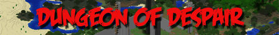
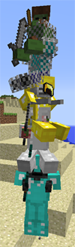
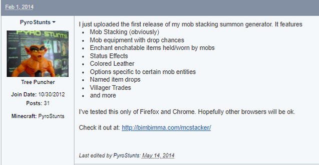
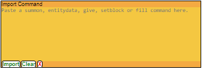
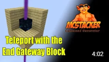
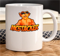
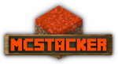
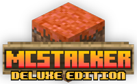
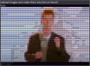
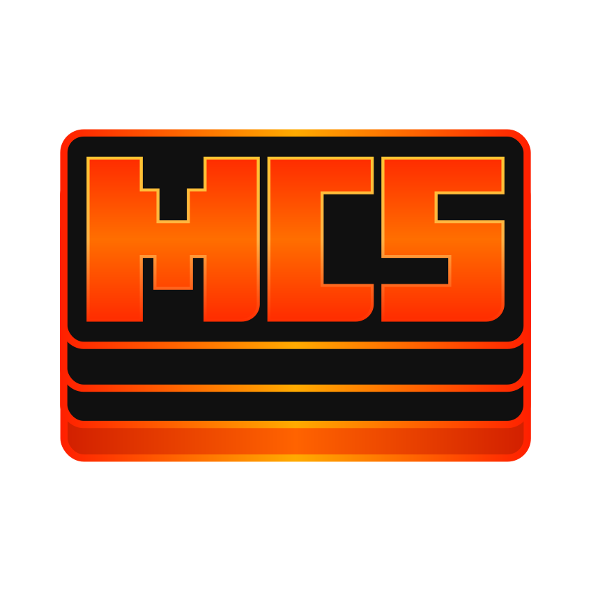

Celebrating 10 Years
This month MCStacker celebrates its 10th birthday. A lot has happened with MCStacker during this time but before I talk about that, I'd like to first talk about how I first got into the awesome game that is Minecraft.
2011
I guess the year would have been 2011. Give or take a year. I was teaching Computer Science at a High School in West Auckland, New Zealand. In one of my senior classes, I had three students Dylan, Afaq, and Mark who could not stop talking about Minecraft. When they described it to me, I was quite intrigued by it. Especially the way the world was procedurally generated. That kind of blew my mind. At the time I wouldn't have considered myself a gamer. But I got Minecraft a short time afterward to experience it for myself.
2012
When I had had enough of playing it in single-player, I was invited to play on a server that Dylan was on. That was good fun. A bit later on I was playing on some of the popular public servers. The experience wasn't great due to the geographic distance between me and the server. It was very difficult to play competitive combat games such as survival games due to the poor latency.
Later this year I began creating my first adventure map. It was called Teleporter Trouble. Command blocks were added in version 1.4.2 so this map relied heavily on them. It's hard to say how many people had played it but I don't think many people did.
2013
It's hard to recall what else happened this year. I recall getting very into the possibilities of Redstone. I made another adventure map. This one was called Dungeon of Despair. It was just a parkour-style map. This was my first ever Minecraft Server. Although the server was listed on a few server lists, I don't think many people played it. So the server was taken offline.

I think it was late 2013 when I saw a tweet from either Dinnerbone or SethBling demonstrating how to use the Riding NBT tag to stack mobs on top of each other. That's about when I thought to myself that people must struggle with commands and getting the brackets in all the right places.
2014
I'm usually on holiday at the beginning of each year and one of the things I like to do in my spare time is to code fun and interesting projects. This is when I began working on a Minecraft summon command generator that could stack entities on each other. I figured a command generator would be helpful as people would not need to have to remember how to spell the tags or how to create a syntax-correct command. The plan was to just create a simplistic user interface and the generator would make the command. I guess I would call it Minecraft Stacker. Or just MCStacker.
On February the 1st, this post was made on the Minecraft Forum. So I guess this is MCStacker's official birth date. When the first announcement was made, MCStacker did not have this many features. I can see that the post was edited in May of that year.

One of the best decisions I made, was to put my email address on the page for "feedback, suggestions, bug reports, or whatever". During that year a lot of people did just that and MCStacker got even better because of the suggestions I received.
Throughout the remainder of the year, I continued adding features to MCStacker. There is even a legacy version of MCStacker still available and you can see the change log. This generator is a little broken possibly due to some sketchy code that modern JavaScript does not accept anymore. I never prioritized fixing bugs on old versions. I was mainly always focused on current and upcoming versions.
During 2014 I tried to be a little more active on the Minecraft forum. A few times I offered people assistance who were asking for help with summon commands. I'd always give MCStacker a mention.
Late in 2014, I added the "Community" page where you could save your commands and write a description about it. This was very good for Google SEO. A decent amount of traffic came to the site as people searched for specific Minecraft commands that users had made. I always enjoyed looking at the inventive summon commands that others had shared there.
2015
During this year, I continued updating MCStacker. This was important as command syntax was always changing and new items, blocks, and entities were being added. One of the ways I learned about specific NBT was by watching Dragnoz's tutorials. He would often showcase some of the amazing things you could do within the constraints of Minecraft which people could use to make cool adventure maps. I recall learning about Attribute Modifiers this way the previous year.
At some point during 2015 Dragnoz uploaded a video that featured MCStacker. When this video came out MCStacker started to become very popular.
In the previous year, I was contacted by Kevin Huang who volunteered to translate the generator into German. Kevin did a tremendous amount of work with this which continued into 2015.
2016
Lots more features were added. Too many to mention here. But one of the things that happened when Minecraft 1.11 was released was that most of the entity IDs were made lowercase.
2017
Minecraft 1.12 was released this year. It was about this time that I realized I'd made some poor design decisions with the way MCStacker worked. It was becoming too hard to maintain and not too much fun to continue working on. It was time for a total rewrite.
The rewrite was completed in June of 2017. This was also when I registered the domain mcstacker.net.
A new logo was created for the new site. I decided to use Lil Pyro. A toy figurine that was acquired dishonestly from a friend in the mid-80s (sorry Craig). It's from the cartoon Blackstar the figurine is known as Alien Demon. Lil Pyro is used as the picture on many of my online profiles.
{kind=link}
The MCStacker Patreon page was created in June. I'm eternally grateful to everyone who has ever supported me on Patreon over the years. Your support there motivated me to keep working on and improving MCStacker.
When I released this version of MCStacker, the feedback was a little negative. It mainly was due to change aversion. But I had to ignore that and do what I knew was right for me and the future of MCStacker. I could no longer tolerate working with the old code base.
One of the defining features of the new version was the command parser/importer. The goal was to be able to paste a command into that box and load it into MCStacker UI so it could be edited. It was too ambitious to make it handle any command, but it was easy enough to make it so that if you generated a command in MCStacker, it should also be able to re-import it. This worked most of the time and when it didn't I fixed it. If it could parse manually created commands or commands from other generators, then that was a bonus.
Snapshots for 1.13 were released in October (The Flattening). This was a huge update for Minecraft because most of the command syntax was changing. I attempted a 1.12 to 1.13 converter. It did most of the syntax conversion but it didn't handle the item, block, and entity ID conversions. This was as far as I got with it.
Also in October, I started producing MCStacker tutorial videos for YouTube. Between 2017 and 2019 I produced about 30 videos. These videos are now all 'private'. What happened was I told a few people about the channel at the school I was now teaching at, but word got around that one of the teachers was a “YouTuber” and low-level fame interfered with my work. The goal was not to get famous on YT. I was just trying to let a few more people know about MCStacker, Minecraft, and commands. That wasn't the only reason. Video production is very time-consuming and that was stopping me from updating MCStacker as often as I'd like to be.
The Mural Generator was released in September. I started this because I thought it would be a cool thing to make. It too has continued to be updated along with Minecraft updates.
 In October iCasm contacted me on Twitter to suggest I make a server on Discord. I hadn't considered that before because I didn't know that Discord could be used for that at the time. I just thought it was a means to communicate in multiplayer games. What an excellent suggestion too. So many enhancements have been made to MCStacker thanks to suggestions and bug reports from the MCStacker Community. Whenever I make a post to the changelog channel, I always like to acknowledge the person who reported the bug or suggested something. Thanks to iCasm for kicking that off and huge thanks to all past moderators and current moderators bathorse, blublu_owns123, and Serioustar. The server currently has over 1880 members.
In October iCasm contacted me on Twitter to suggest I make a server on Discord. I hadn't considered that before because I didn't know that Discord could be used for that at the time. I just thought it was a means to communicate in multiplayer games. What an excellent suggestion too. So many enhancements have been made to MCStacker thanks to suggestions and bug reports from the MCStacker Community. Whenever I make a post to the changelog channel, I always like to acknowledge the person who reported the bug or suggested something. Thanks to iCasm for kicking that off and huge thanks to all past moderators and current moderators bathorse, blublu_owns123, and Serioustar. The server currently has over 1880 members.
This was a huge year for MCStacker.
2018
This year MCStacker continued to be improved with new features. One of the handy features that was added was the item/entity copy-and-paste functionality. This sped things up for people who had to duplicate a lot of similar NBT into several places in their commands.
I dipped my toe in the merch game. I set up a shop to sell MCStacker branded merchandise. At some point in time later on, somebody on Discord showed a picture of a coffee mug they bought. I can't find it now or remember who it was sorry. This merch was so exclusive that not even I own any of it. Anyway, I just logged into my Spreadshirt account. They owe me $3.50. I don't know what the total sales were. I didn't want to be the guy who always promotes merch, so don't buy the merch, you probably don't need it anyway.
I was still making MCStacker videos for YouTube. I was going to start making a video series showing how to create a Minecraft minigame from start to finish by using functions and data packs. I began creating Weaponized Creeper Wars. This was such a fun game to create. When the game was finished I was going to then create videos to explain the whole thing. None of these videos were ever recorded. It was mainly down to time constraints or just running out of motivation. But the minigame server was created and is still running now. Although It was offline for many years between then and now. I did eventually get around to making a trailer video for the server which is the only publically available video on my channel.
I was putting a little thought into something special for people who supported me on Patreon. The ultimate perk I decided would be to make an offline edition of MCStacker. I just put the current and previous versions of MCStacker into a zip file and gave patrons access to the file. Something like this had been requested many times since the beginning.
The interactive NPC generator was created this year. This too was a fun project that I enjoyed making. The generator could make a data pack for you for an entity that you could interact with via tellraw prompts. It's very flexible and can be used for many different things. I continue to update this to maintain compatibility with the later versions of Minecraft, but I haven't been adding enhancements to it.
2019
This was a pretty quiet year for MCStacker. I was just doing all the normal maintenance and staying up-to-date with releases. Minecraft 1.14 was released in April this year. Later in the year, 1.15 was released. I did however introduce a basic Loot Table generator into MCStacker.
2020
A few performance bugs were reported. Especially for commands with many items. For example, villagers trades. A considerable amount of work went into solving this. One of the ways this was addressed was by not loading the item UI for items in an imported command. This helped a lot but with a major change like this, many new bugs were created. I fixed one of these as recently as 2024. In addition to this, I just continued updating MCStacker for Minecraft 1.16. Jhmaster from Discord created the Dark Theme for MCStacker this year.
Traffic to the site was pretty good this year. I guess a lot of people were staying home and creating adventure maps for some reason.
2021
Some great enhancements were added this year. I began supporting other languages for blocks and items. The preferred language can be chosen in the settings.
One of the things that MCStacker didn't handle properly in some cases was proper parsing and escaping of strings. It's still not 100% but it was made significantly better throughout the year.
The experimental Custom Theme Editor was shared this year. Not many people use this as it was only ever mentioned a few times on Discord. No further work has progressed on this since it was announced. If you know a bit about CSS you might like to mess about with it.
I was messaged by Triarite on Discord who suggested that the Discord server be rearranged a bit. They were given admin privileges to carry out this work. Not only did Triarite make these changes. They also redesigned the MCStaker logo. The Lil' Pyro logo was being retired from the main page but remained in some older versions.
2022
I set up a Ko-fi page for MCStacker so that people who wanted to make a one-off donation could easily do that. Towards the end of the year, I began selling the offline edition of MCStacker from the Ko-fi page. This was a pretty good thing to do as lots of offline editions were sold for the times when people needed to generate commands and there was no internet connectivity. These were only $2 because they were not updated. You'd have to buy it again as I continued to update MCStacker. Sometimes people paid a lot more than the asking price so that was especially appreciated.
2023
Work began this year on the Deluxe Edition. Many times people have asked for an installable version of MCStacker. I began work on this at the beginning of the year. It was tough getting it to work and learning how the Electron framework is supposed to be used. I didn't want to have to rewrite MCStacker again. Preferably I wanted to be able to reuse the main Javascript code but also code some extra functionality into it to make it a little more sought after than the same as the website. Feedback about the Deluxe Edition has been great and I'm so happy I put the work in. I'm extremely satisfied that I could also support MacOS and Linux with it and not just Windows. Thanks to bamajoe411 and bathorse for the encouragement to also support these other two operating systems.
This year we were given display entities in Minecraft so I made sure I implemented them in MCStacker as soon as I could. The potential for these entities in adventure maps is virtually unlimited so am pleased to have included it in the generator.
The Lore, /tellraw, and text_display entities had an image-to-text component converter added to it. This was a cool feature suggested by NinjaSloth that could be used to add a bit more visual content to adventure maps.
Lots of command syntax needed to be changed this year around custom potion effects. So I made sure to address this in MCStacker.
2024
As we begin the year I'm still preparing for the release of 1.20.5. Not too much has happened so far this year, so there's not too much to mention about it. But we do have new logos/branding. This time created by Aandeel. These are very nice. I've been enjoying putting them on the various pages and profiles. Also, MCStacker had its 10th birthday this February and to celebrate this, I'm writing about it right now.
The Future
I hope that in 2034 I'm adding part two to this for the 20th Birthday Celebration. I should continue to have enough time to keep working on MCStacker. There is always enough time to stay up-to-date with Minecraft snapshots and releases. People will still be playing Minecraft in 10 years, I predict. However, I would like to find more time to work on new features. The “To Do” list is still very long. It has things on it such as a fully featured Loot Table generator. So I hope I can tackle a few of these things when time allows.
Thanks
There are too many people to thank individually but I like to thank everyone who:
- Made suggestions
- Reported bugs
- Offered support to others
- Explained stuff to me
- Moderated Discord
- Supported on Patreon
- Supported on Ko-fi
- Told others about MCStacker
- Bought something. Even a coffee mug
- Contributed in some way
- Works at Mojang